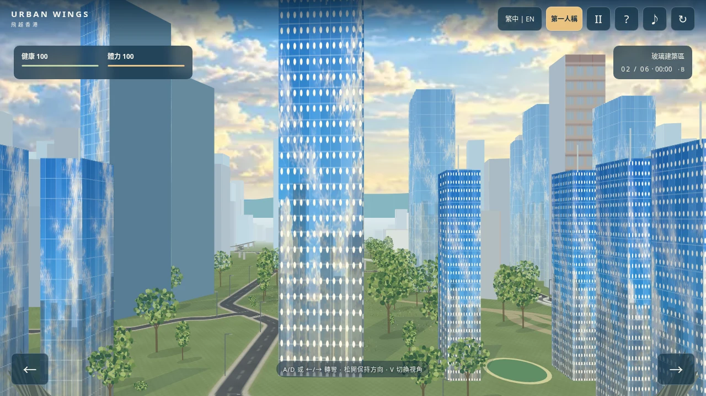
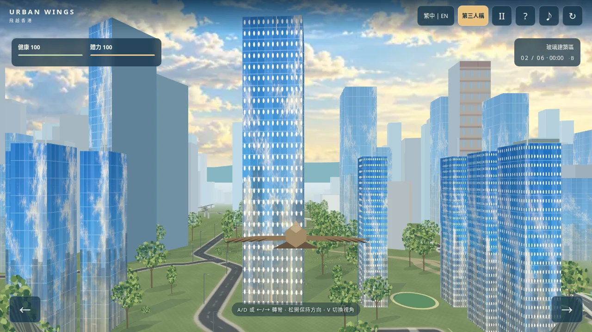
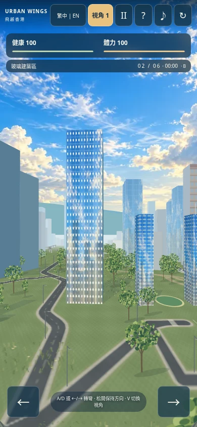
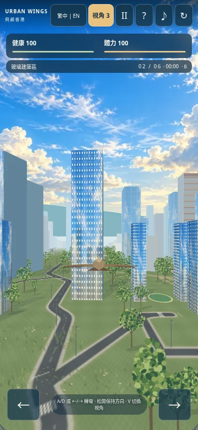
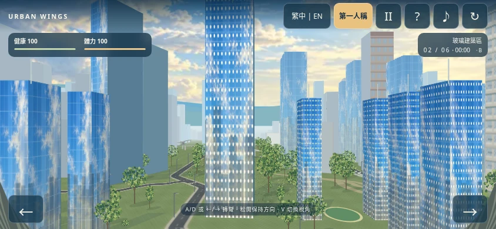
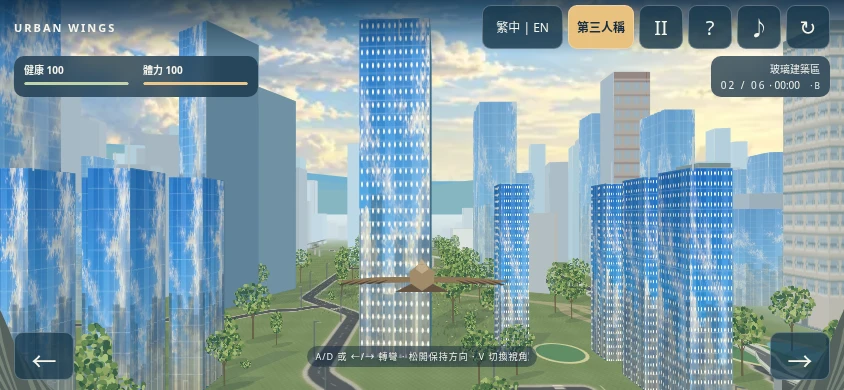

按住 A/D、←/→ 或触屏箭头转弯，松开后保持新航向。金色「视角」按钮或 V 切换第一／第三人称。撞墙先阻挡，再执行伤害反馈；无敌时间不会让鸟穿墙。
前进型关卡支持左右转到侧向（±90°），不支持掉头倒飞。镜头在狭窄位置回缩；不会替鸟转向。手机测试为浏览器模拟，未使用实体设备。






| 环境／区内通路 | 成功 | 生命 | 剩余体力 | 用时 |
|---|---|---|---|---|
| A / 1 | True | 100 | 9.88 | 155.78s |
| A / 2 | True | 100 | 10.94 | 153.81s |
| A / 3 | True | 100 | 11.36 | 153.04s |
| B / 1 | True | 100 | 32.33 | 151.24s |
| B / 2 | True | 100 | 37.65 | 154.35s |
| B / 3 | True | 100 | 27.87 | 159.51s |
| C / 1 | True | 100 | 21.63 | 165.51s |
| C / 2 | True | 100 | 53.39 | 169.65s |
| C / 3 | True | 100 | 16.48 | 175.04s |
自动测试驾驶器只存在于测试脚本，游戏没有自动导航。读卡时间不计入飞行用时，资源数值为游戏设计。